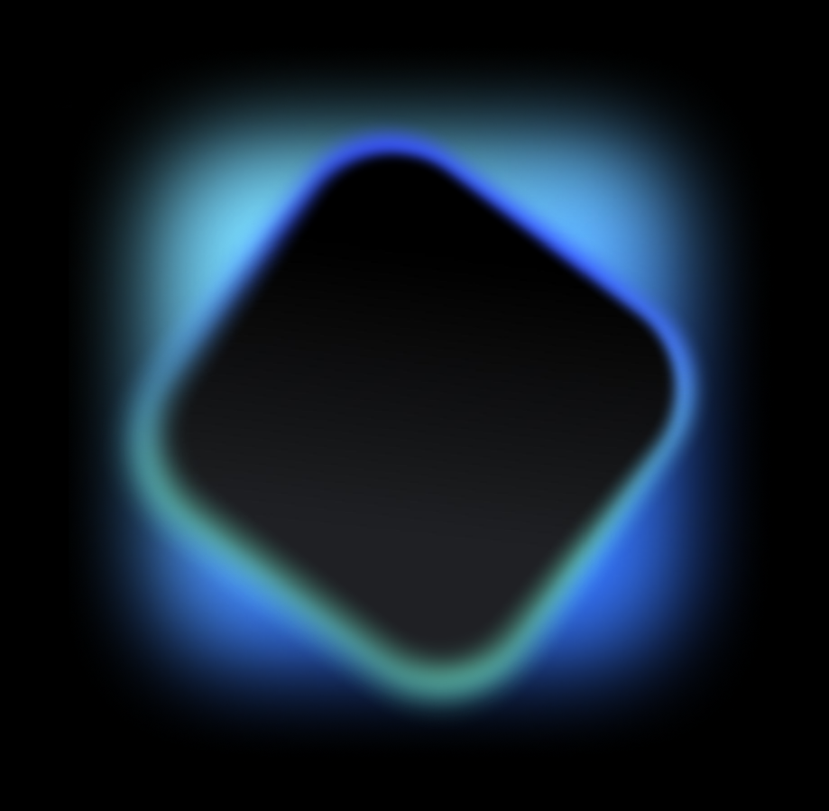
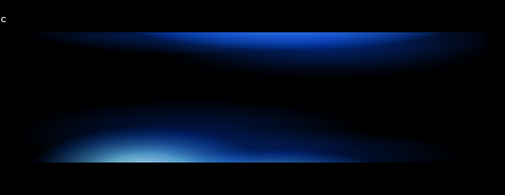
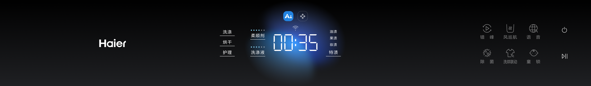
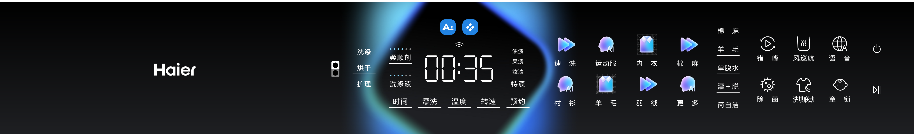
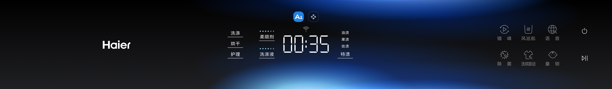

01
品牌一致性
背景构建产品的数字环境，从旗舰 TFT 到基础 LED，均遵循统一的 Haier 品牌语言；不同设备的表达能力可以不同，品牌感知应一致。
背景是界面的情境感知层：建立空间纵深，辅助状态表达，同时绝不干扰前景任务、组件与文字。
背景构建产品的数字环境，从旗舰 TFT 到基础 LED，均遵循统一的 Haier 品牌语言；不同设备的表达能力可以不同，品牌感知应一致。
避免复杂纹理、强对比材质和高频细节；资源受限时进一步简化。动态背景采用平滑缓动，不出现突变或剧烈闪烁。
光影和色彩变化不得遮蔽文字、图标与关键操作。画面过亮或过于复杂时，压暗背景（如底部深色渐变遮罩），或把透明毛玻璃卡片切换为不透明实色。
依据交互模式选择背景语义；动态与静态是实现形式，不能替代 AI / 常规模式的区分。
强调算法介入、意图预判与科技感知。以无具体形态的流体光晕表达计算与感知，避免具象实物；以低干扰暗场承载主控大数字与 AI 推荐标签，让前景获得最高视觉优先级。
强化水、冰、温度、气流等物理直觉与环境沉浸感。采用具象化物理环境并遵循品牌语义色彩；前景卡片与背景物理元素形成明确的 Z 轴前后叠层，不能让主体图像穿透信息区域。
| 设备能力 | 呈现方式 | 保留与降级边界 |
|---|---|---|
| 高端 | 可使用克制的动态流体光晕或物理环境动态 | 保持缓动、低频变化与前景暗场；以实机帧率和亮度验收。 |
| 中端 | 预渲染短循环、低频轻动效或静态关键帧 | 保留模式语义和明暗结构，减少粒子、细节与实时效果。 |
| 低端 | 静态渐变或简化的单张背景 | 优先文字可读与性能稳定；不用高频纹理、闪烁或计算密集的模糊。 |
LED 以少量低频光形表达状态；暗场保留关键参数的稳定对比度。三种样式按信息结构选择，不叠加为装饰。
柔和、无明确边界的单点球形渐变光晕。用于单点聚焦与基础状态提示，突出单一模式图标或设备基本运行状态。
闭合的圆角菱形轮廓，内部完全留为暗场。作为核心数据容器包裹全屏最重要的参数，以纯黑内腔保障信息对比度。
沿水平 X 轴展开的大面积弥散光带。适用于宽屏比例、多个并列参数或全局状态；光带不能冲淡信息区域的暗场。
A / B / C 光形及对应的界面适配效果，均裁取自 LED 附件；图片内容未重绘。




